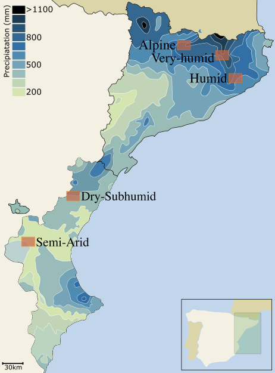

I am in the list of selected projects from the CiDEGEN funding scheme from the Generalitat Valenciana! Final resolution will be mid-May. I will start to look for people from January 2027. My project is associated to a PhD and a Postdoc (3 years + 1), focused on Biodiversity-Ecosystems Function relationships in ponds habitats and across terrestial to ponds interactions.
The concept of biodiversity-ecosystem functions (BEF) proposes that increasing biodiversity enhances the capacity of ecosystems to sustain multiple functions and services. While this framework has received significant attention over recent decades, most research has primarily focused on analyses within a single ecosystem, overlooking the joint effects across adjacent ecosystems, like ecotones between terrestrial and freshwater realms, where a constant exchange of energy, matter, and organisms occurs. In light of the current loss of biodiversity and the simplification of ecosystems caused by Global Change, conducting BEF research across ecosystems becomes imperative. In the WaterLand project, I will assess BEF relationships across aquatic (i.e., ponds) and terrestrial ecosystems within the Mediterranean landscape.
Mediterranean regions are a global biodiversity hotspot, but also one of the most vulnerable areas worldwide, with freshwater-terrestrial ecotones remaining critically understudied, despite their considerable potential for buffering extreme climatic events. Ponds, meanwhile, are among the most abundant and diverse freshwater habitats, providing critical ecosystem functions and services (e.g., carbon storage, flood control and pollination). Still, they are increasingly vulnerable and remain underrepresented in BEF studies, particularly in cross-ecosystem contexts. This knowledge gap limits our understanding of how aquatic-terrestrial interactions are critical to maintaining ecosystem functions and providing essential services to society, including climate change mitigation.
Within this framework, I will investigate how taxonomic and functional diversity of terrestrial plants modulate pond biodiversity and ecosystem processes, and evaluate the factors, such as landscape structure and climate, that govern BEF relationships across ponds and terrestrial habitats. Ultimately, WaterLand aims to generate valuable insights to identify key aspects for the conservation of ponds and their sustainable terrestrial habitats, offering strategies for creating and restoring Mediterranean ponds.
The overarching aim of my research line is to determine the relationships between biodiversity and ecosystem functions across terrestrial-aquatic ecotones in the Mediterranean basin.
Objective 1: Assessing the influence of terrestrial complexity on pond biodiversity and functioning.
Objective 2: Assessing the influence of bioclimatic gradient and local environmental factors on BEF relationships.
Objective 3: Experimental microcosms.

For the development of this project, I plan to apply to several funding bodies, including the ERC starting grant from the Horizon Europa, which offers opportunities for funding innovative projects to researchers with outstanding academic record.
{kind=link}